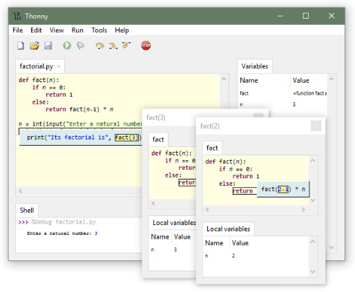
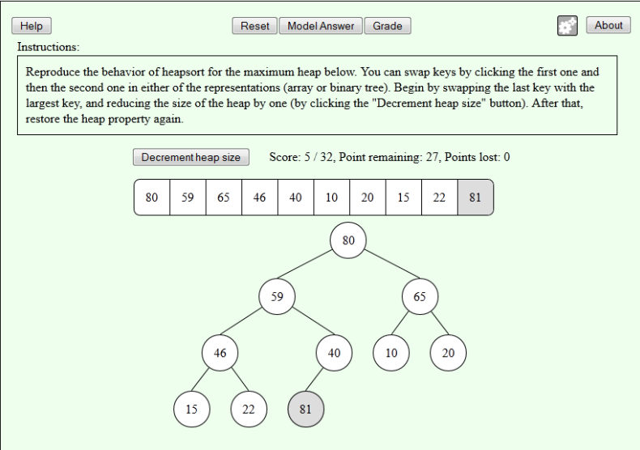
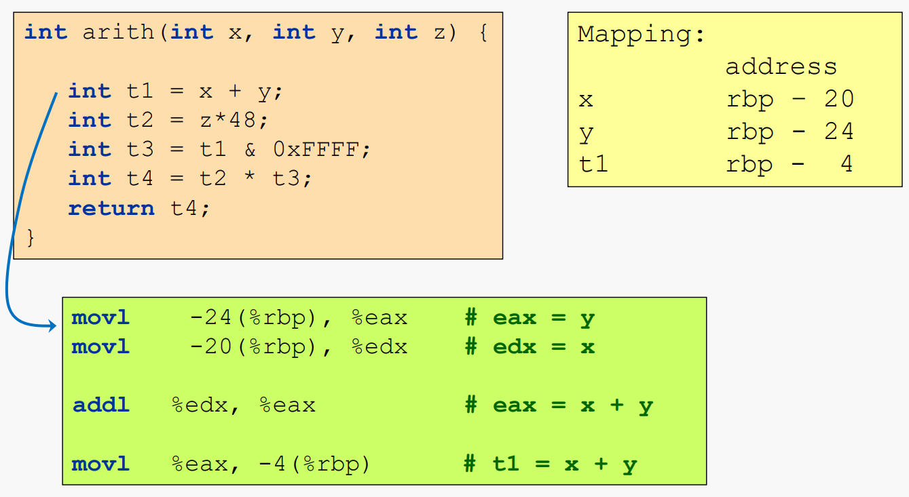
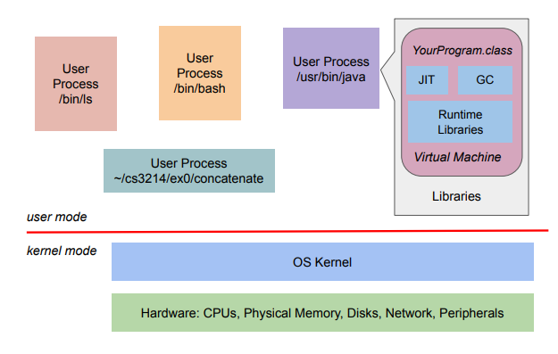

One thing that I learned about myself during my time at Virginia Tech is that I love teaching.
I remember hearing about the Feynman Technique, which summarized that the best way to learn something is to teach it to someone else.
I really cherished the interactions I have had with my fellow hokies at Virginia Tech and helping them realize that they can not only learn Computer Science, but also have fun doing so.
I hope to one day become an adjunct professor to supplement my industry working experience.

CS 1064: Intro to Python Programming
Spring 2022
This course focuses on developing computational problem-solving skills and software solutions to a variety of multimedia, scientific, and engineering problems using the Python programming language. I hosted six office hours per week and graded assignments.
Learn more about CS 1064

CS 3114 / CS 5040: Data Structures and Algorithms
Summer 2022
This course teaches advanced data structures and analysis of data structure and algorithm performance. Topics include sorting, searching, hashing, and advanced tree structures and algorithms. I hosted ten office hours per week and gave additional lectures to help students with the projects.
Learn more about CS 3114

CS 2505: Intro to Computer Organization 1
Fall 2022
This course serves as an introduction to the design and operation of digital computers. Topics include combinational and sequential circuits, information representation, computer arithmetic, arithmetic/logic units and control unit design. I hosted ten office hours per week and gave additional lectures to help students with the projects.
Learn more about CS 2505

CS 3214: Computer Systems
Spring 2023
This course introduces computer systems as they are relevant to application programmers today, with an emphasis on operating systems principles. Topics include operating systems design and architectures, processes, threads, virtual and physical memory management, network protocols and programming, and virtualization. I hosted twelve office hours per week and an additional help session for the first project.
Learn more about CS 3214